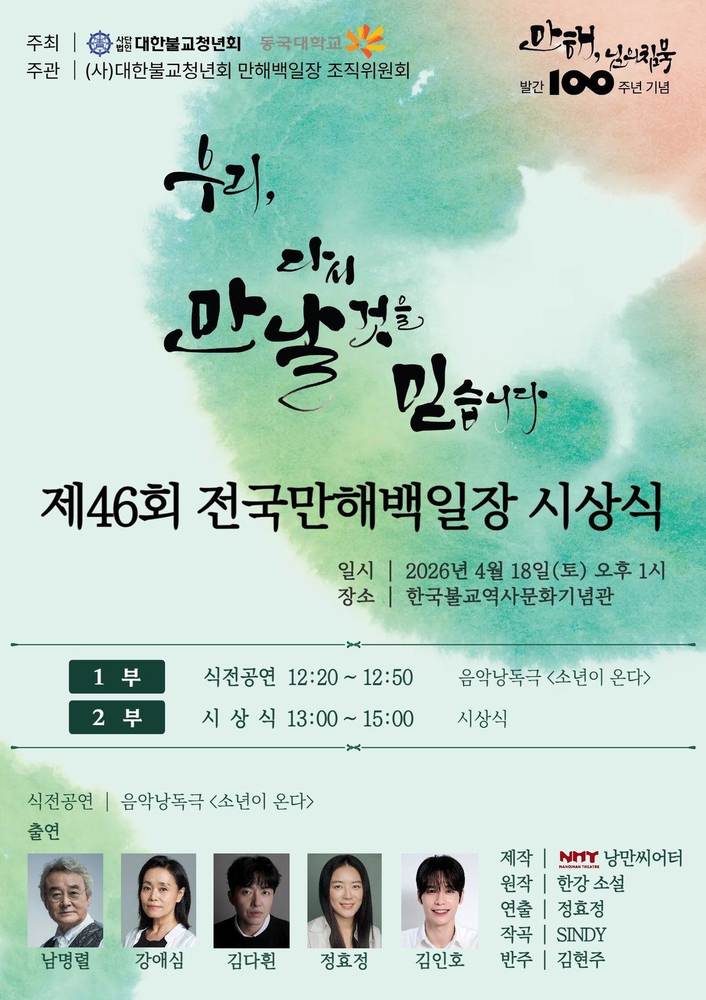

Human Acts
한강 장편소설 원작 · after the novel by Han Kang
제46회 전국만해백일장 시상식 초청공연 · Invited performance, 46th National Manhae Poetry Contest Award Ceremony
아시아 최초 여성 노벨문학상 수상 작가 한강의 소설 『소년이 온다』를 원작으로 한 뮤지컬. 1980년 5월 광주를 배경으로, 살아남은 자들의 기억과 목소리를 통해 역사의 상처와 인간의 존엄을 탐구한다.
낭만씨어터가 제작하고 정효정이 연출과 배우를 겸했다. 남명렬, 강애심, 김다흰, 정효정, 김인호 배우가 출연하고, 신디 SINDY가 작곡을, 김현주가 반주를 맡았다.
A musical adapted from Human Acts by Han Kang — Asia's first female Nobel laureate in Literature (2024). Set against the 1980 Gwangju Uprising, the work gives voice to survivors and the dead, exploring historical trauma and human dignity.
Produced by Nangman Theatre, directed and performed by Hyojung Jung, with cast members Myung-ryeol Nam, Ae-shim Kang, Daheen Kim, Hyojung Jung, and In-ho Kim, with original music by composer SINDY and piano accompaniment by Hyun-joo Kim.
공연 전경 · in performance
낭독 · reading
정효정 연출·배우 · Hyojung Jung (Director / Performer) — 법보신문 Beopbo Press
남명렬 배우 · Myung-ryeol Nam — BTN News
공연 후 단체 사진 (로비에서) · After-show group photo, lobby
리허설 · Rehearsal
리허설 · Rehearsal · 신디 SINDY 작곡가 · 김현주 반주자 · SINDY (Composer) · Hyun-joo Kim (Accompanist)
The same author on another border — staged here as Human Acts, read in Riyadh as The Vegetarian.